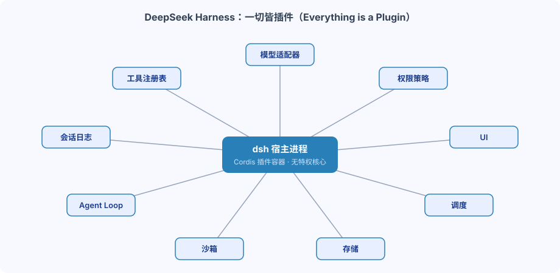
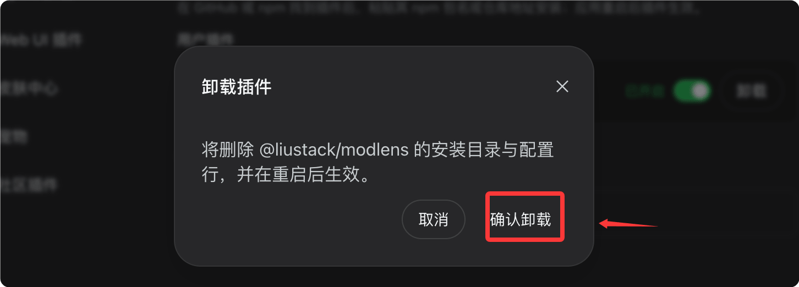
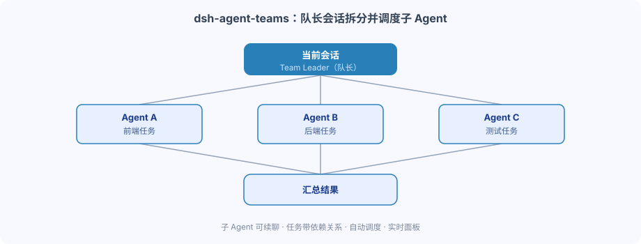

Complementos de la comunidad de DeepSeek Harness
El diseño central de DeepSeek Harness (abreviado dsh)es "Everything is a Plugin" (todo es un plugin)。
En dsh, los adaptadores de modelo, el registro de herramientas, los registros de sesión, el bucle de agentes (Agent Loop), el sandbox, el almacenamiento, la programación de tareas, la UI e incluso las políticas de permisos pueden existir como plugins de Cordis.
Cordis es un framework de aplicación ligero basado en plugins que se encarga de forma unificada del registro, la resolución de dependencias y la gestión del ciclo de vida de los plugins.
DeepSeek Harness no es un agente con funciones hardcodeadas, sino más bien una infraestructura de agentes que se puede montar y ensamblar continuamente.
La estructura de los agentes LLM tradicionales suele ser bastante fija: prompt, modelo, agente y herramientas conectados en secuencia, y la mayoría de las capacidades están encapsuladas en el núcleo del framework.

Una forma más precisa de entenderlo es: dsh no es un agente con muchas funciones incorporadas, sino unruntime que puede ensamblar continuamente capacidades de agente mediante plugins。
No necesitamos modificar el código fuente principal de dsh para cambiar su comportamiento.
Las necesidades comunes y sus soluciones correspondientes son las siguientes:
| Necesidad | Solución | Ejemplo de plugin correspondiente |
|---|---|---|
| Cambiar la interfaz | Instalar un plugin de UI | dsh-web-ui、dsh-TUI |
| Añadir capacidades de visión | Instalar un plugin de visión | modlens、dsh-vision-toolkit |
| Colaboración multiagente | Instalar el plugin Agent Teams | dsh-agent-teams |
| Automatización del navegador | Instalar el plugin Browser | dsh-browser、BrowserSkill |
| Gestión de contexto | Instalar el plugin Context | dsh-context |
Los plugins también pueden combinarse entre sí para formar entornos de trabajo completamente diferentes.
En dsh, los adaptadores de modelo, el registro de herramientas, los registros de sesión, el bucle de agentes, el sandbox, el almacenamiento, la programación, la UI e incluso las políticas de permisos, todo existe en forma de plugins de Cordis.
La siguiente figura muestra la estructura general de pluginización de dsh; el host solo se encarga de organizar las capacidades, y todas las capacidades son proporcionadas por los plugins:

Profile: determina en qué entorno se ejecuta el plugin
La instalación de plugins de dsh tiene una diferencia clara respecto a los paquetes npm y Python normales: después de instalar el plugin, el entorno en el que se ejecuta lo determina el Profile.
Un mismo dsh puede cargar diferentes combinaciones de plugins según el escenario de uso, y los distintos Profiles no interfieren entre sí.
Los tres Profiles más comunes son los siguientes:
| Profile | Forma | Escenario aplicable |
|---|---|---|
| web | Workbench web accesible desde el navegador | Desarrollo interactivo diario, panel de tareas, acceso remoto |
| tui | Interfaz de terminal a pantalla completa | Desarrollo remoto por SSH, usuarios acostumbrados a la línea de comandos |
| headless | Ejecución en segundo plano sin interfaz | Scripts de automatización, integración de CI, tareas programadas |
Por ejemplo, una combinación típica de plugins para Web Profile:
Web Profile ├── dsh-web-ui # Web 工作台 ├── dsh-better-sidebar # 侧边栏工作区 ├── modlens # 视觉能力 └── dsh-market # 插件市场
Mientras que un usuario de terminal podría quedarse solo con:
TUI Profile └── dsh-TUI # 全屏终端界面
Instalación de plugins
dsh ofrece una entrada de instalación unificada para plugins; se puede completar con un solo comando.
# 安装插件到 web profile（--profile 指定目标环境，必填） dsh plugin --profile web add <源> # 安装插件到 tui 终端环境 dsh plugin --profile tui add <源>
Tomando la instalación de dsh-web-ui (dirección de código abiertohttps://github.com/zhu1090093659/dsh-web-ui) como ejemplo:
dsh plugin --profile web add @linxin666/dsh-web-ui-all@latest
Después de la instalación y de reiniciar, podemos ver los plugins instalados en la lista de plugins de los ajustes:

Luego podemos ver las funciones del plugin en la lista izquierda y probar a instalar una skin:

Un flujo de instalación completo suele ser el siguiente:
选择 Profile
↓
安装插件
↓
检查依赖 / README
↓
重启对应服务
↓
验证插件是否加载
Si deseas desinstalar un plugin, solo tienes que hacer clic en el botón de desinstalar en la lista de plugins del menú de ajustes:

Haz clic en confirmar la desinstalación para completarla:

A continuación presentamos algunos plugins que actualmente son de código abierto. Para más plugins de la comunidad, puedes seguir:https://github.com/topics/dsh-plugin。
Mejoras de UI y workbench
Este tipo de plugins resuelve el problema de "la interfaz no es lo bastante usable" y transforma dsh de una herramienta de línea de comandos a un workbench completo cercano a un IDE.
Entre ellos, dsh-web-ui y DSH-better-sidebar son la combinación más popular de la comunidad; el primero completa las funciones de la interfaz web, y el segundo proporciona una barra lateral permanente.
| Plugin | Descripción | Comando de instalación |
|---|---|---|
| dsh-web-ui | Paquete completo de Web UI: panel de tareas, gráfico de Git, panel derecho, móvil remoto, mascota de escritorio, estadísticas de tokens en tiempo real, centro de skins | dsh plugin --profile web add github:zhu1090093659/dsh-web-ui |
| DSH-better-sidebar | Workbench completo de barra lateral: árbol de archivos / editor, terminal, Git, subagentes, admite que plugins de terceros registren nuevas pestañas | dsh plugin --profile web add dsh-better-sidebar |
| dsh-TUI | TUI de terminal de pantalla completa estilo Claude Code: pensamiento en streaming, retroceso con doble Esc, barra de estado, cambio de modelo | dsh plugin --profile tui add @deepseek-harness-tui/dsh-tui |
| dsh-at-file | En el campo de entrada, @ para buscar y referenciar rápidamente archivos / directorios del espacio de trabajo | dsh plugin --profile web add github:omdsh-dev/dsh-at-file |
dsh-web-ui no es solo un cambio de interfaz, sino que añade capacidades de workbench como panel de tareas y gráfico de Git en torno al flujo de trabajo del agente.
DSH-better-sidebar resuelve el problema de la "capacidad de organización del espacio de trabajo", y es adecuado para usuarios que quieren convertir dsh en un "IDE de IA".
El uso de dsh-at-file es muy intuitivo: escribe @ en el campo de entrada para buscar y referenciar archivos del espacio de trabajo:
请分析 @runoob-demo/src/main.py 比较 @runoob-demo/src/api 和 @runoob-demo/src/service
Para un agente de código, esta forma de interacción es mucho más natural que copiar manualmente el contenido de los archivos.
Para los usuarios de terminal se recomienda más dsh-TUI, que ofrece salida en streaming y retroceso de mensajes en el terminal, con una experiencia cercana a Claude Code.
Visión y multimodalidad
dsh puede "acoplar" capacidades de procesamiento visual al agente originalmente centrado en texto mediante plugins.
La idea central de modlens es convertir las imágenes en evidencia visual estructurada y luego entregársela al modelo de texto.
Al pegar la misma captura de pantalla de una página web, no se obtiene "esto es una captura de pantalla web", sino una combinación de texto OCR, información de diseño, coordenadas y etiquetas semánticas.
| Plugin | Descripción | Comando de instalación |
|---|---|---|
| modlens | Un modelo de solo texto se convierte al instante en multimodal: pega una imagen y genera OCR estructurado, diseño y evidencia semántica | dsh plugin --profile web add @liustack/modlens |
| dsh-vision-toolkit | Caja de herramientas visual completa: preguntas y respuestas de intención, OCR de capturas largas, restauración de UI, grounding, diff de píxeles | dsh plugin --profile web add @anionex/dsh-vision-toolkit |
| dsh-vision-router | Cadena de visión gratuita y herramientas a nivel de píxel, compatible con Ollama / LM Studio local | dsh plugin --profile web add dsh-vision-router |
Este tipo de plugins es adecuado para tareas como OCR, análisis de capturas de pantalla web, comprensión de documentos y extracción de contenido de imágenes.
Si tu trabajo principal implica desarrollo frontend, réplica de UI o análisis de capturas, dsh-vision-toolkit será más práctico que un simple OCR.
Los usuarios que deseen un despliegue totalmente local de las capacidades de visión pueden prestar especial atención a dsh-vision-router.
Skins, temas y mascotas de escritorio
Este tipo de plugins no necesariamente mejora la capacidad central del agente, pero refleja mejor el grado de radicalidad de "todo es un plugin": incluso las skins y las mascotas de escritorio son plugins.
| Plugin | Descripción | Comando de instalación |
|---|---|---|
| dsh-deep-whale | Serie de skins "Whale Girl" (Deep Sea Maid Workshop, etc.), compatible con modos claro / oscuro | dsh plugin --profile web add github:Small-tailqwq/dsh-deep-whale |
| Serie whale-girl / dsh-pet | Pequeña ballena de escritorio arrastrable, alimentable e interactiva (varios repositorios de la comunidad) | Instalar según el README de cada repositorio |
Si crees que el workbench de agentes es demasiado serio, estos plugins son básicamente la prueba lúdica de la "pluginización".
Multiagente y flujos de trabajo
Si los plugins de UI resuelven "cómo usar dsh", los plugins multiagente resuelven "cómo hacer que varios agentes trabajen juntos".
La idea de dsh-agent-teams es muy intuitiva: la sesión actual actúa como líder y distribuye tareas a varios subagentes con los que se puede seguir conversando.

| Plugin | Descripción | Comando de instalación |
|---|---|---|
| dsh-agent-teams | La sesión actual se convierte en líder: crea subagentes con los que se puede continuar la conversación, tareas con dependencias, programación automática, panel en tiempo real | dsh plugin --profile web add @nanmicoder/dsh-agent-teams |
| dsh_workflow | Capa de Workflow capaz de generar, guardar, restaurar, observar y gobernar. | dsh plugin --profile web add "github:dsh-external/dsh_workflow#main" |
La división del trabajo entre ambos puede entenderse así: agent-teams resuelve «varios Agents trabajando juntos», y workflow resuelve «fijar el flujo de trabajo de los Agents para ejecutarlo repetidamente».
Combinados, pueden formar una cadena de ejecución completa:
需求 ↓ Leader Agent（任务拆分） ├── Frontend Agent ├── Backend Agent ├── Test Agent └── Review Agent ↓ Workflow（流程固化、反复执行） ↓ 最终结果
En este punto, dsh comienza a pasar de «AI me ayuda a escribir código» a «el AI Agent organiza por sí mismo múltiples unidades de ejecución para completar tareas».
Navegador y automatización
Una vez que los Agents entran realmente en entornos de producción, normalmente no basta con poder leer y escribir código; también necesitan abrir páginas web, leer páginas, hacer clic y escribir, y ejecutar tareas con la sesión iniciada.
A diferencia de las soluciones de navegador headless, dsh-browser controla directamente el Chrome local, conservando todo el estado de inicio de sesión y las cookies; el Agent no tiene que iniciar sesión desde cero cada vez.
| Plugin | Descripción | Comando de instalación |
|---|---|---|
| dsh-browser | Controla un Chrome real (conserva inicio de sesión / cookies), control de páginas web mediante texto estructurado. | El repositorio ofrece un script de instalación con un clic (incluye extensión de navegador). |
| BrowserSkill | Solución de código abierto de Tencent para automatización de navegador con sesión real (CLI + extensión). | Instalar según las instrucciones del repositorio. |
Los plugins de navegador son adecuados para automatización de sitios web, operaciones de administración, recopilación de datos, pruebas web y otras tareas que requieren estado de inicio de sesión.
Este tipo de plugins suelen implicar también componentes adicionales como extensiones de navegador; se recomienda instalarlos según el script oficial o el README, en lugar de ensamblar comandos manualmente.
Memoria, contexto y migración de sesiones
Cuanto más se usan los Agents, el verdadero problema no suele ser que el modelo no sea lo bastante inteligente, sino que el contexto se vuelve cada vez más desordenado.
Este tipo de plugins se centran en el «contexto»: o importan sesiones de otros lugares, o muestran con claridad la composición del contexto actual.
| Plugin | Descripción | Comando de instalación |
|---|---|---|
| dsh-chat-import | Importa sin pérdida sesiones históricas desde Claude Code / Codex / ChatGPT / Cursor / Gemini, etc. | dsh plugin --profile web add dsh-chat-import |
| dsh-context | Panel de visualización de composición del contexto, tendencias de tokens, compresión / recorte. | dsh plugin --profile web add dsh-context |
Si ya has usado otros Coding Agents de forma intensiva, plugins de migración como dsh-chat-import serán muy valiosos.
Para Coding Agents de ejecución prolongada, la gestión del contexto será cada vez más importante.
La efectividad del Agent depende en gran medida de «capacidad del modelo + calidad del contexto + capacidades de las herramientas + estado de la tarea», y no solo de mirar los benchmarks del modelo.
Descubrimiento y gestión de plugins
Cuando el número de plugins aumenta, surge un nuevo problema: dónde encontrar plugins.
dsh-market incluye un mercado de plugins integrado en la página de configuración, con búsqueda, categorías e instalación/actualización con un clic; dsh-find-plugin va más allá y permite buscar plugins directamente en la sesión mediante lenguaje natural.
| Plugin | Descripción | Comando de instalación |
|---|---|---|
| dsh-market / dshmarket | Mercado de plugins integrado en la página de configuración: búsqueda, categorías, instalación / actualización con un clic. | dsh plugin --profile web add dshmarket |
| dsh-find-plugin | Búsqueda de plugins mediante lenguaje natural dentro de la sesión; devuelve descripción y comando de instalación. | dsh plugin --profile web add dsh-find-plugin |
Por ejemplo, si preguntas directamente «¿hay algún plugin que pueda analizar capturas de pantalla de páginas web?», devolverá el nombre del plugin, su descripción funcional y el comando de instalación.
Si planeas usar dsh a largo plazo, se recomienda explorar primero el mercado de plugins, en lugar de buscar manualmente decenas de repositorios de GitHub al principio.
«Buscar plugins» también es un plugin; esto es una manifestación directa de la filosofía de diseño de Everything is a Plugin.
Otros plugins útiles
Además de las categorías principales anteriores, la comunidad también tiene algunos proyectos con bastante atención y que no son fáciles de clasificar.
| Plugin | Descripción | Comando de instalación |
|---|---|---|
| deepseek-harness versión de escritorio | Cliente de escritorio, inicio con un clic. | Descargar e instalar |
| Lista seleccionada de plugins de DeepSeek Harness | Recopila algunas listas seleccionadas de plugins. | Instalar según la documentación del plugin. |
| archify | Genera diagramas de arquitectura / flujo atractivos y verificables (en formato Skill). | Según el método de instalación de Skill del repositorio. |
| dsh-plugin-subscriptions | Inicia sesión mediante OAuth y reutiliza en dsh las suscripciones existentes de ChatGPT / Claude / Grok (repositorio de la comunidad). | Instalar según el README del repositorio. |
El cliente de escritorio es adecuado para quienes no quieren manejar la línea de comandos ni el entorno de ejecución; archify, por su parte, es muy útil para quienes suelen pedir al Agent que analice repositorios de código y diseñe arquitecturas de sistemas.
Los plugins de suscripción implican autorización de cuentas y servicios de terceros, con un riesgo de seguridad claramente mayor que los plugins de UI comunes. No instales únicamente por palabras clave como «modelo gratuito» o «suscripción gratuita»; asegúrate de revisar primero el código fuente, el alcance de permisos y el proceso de autorización real.
Recomendaciones basadas en escenarios
La ventaja de dsh no es que «cuantos más plugins, más potente», sino la libertad de combinar según tu propio flujo de trabajo.
No instales de inmediato una docena de plugins; puedes montar tu entorno siguiendo los siguientes grupos de escenarios típicos.
| Escenario de uso | Combinación recomendada | Capacidades cubiertas |
|---|---|---|
| Combinación inicial para quienes empiezan | dsh-web-ui + DSH-better-sidebar + dsh-market + modlens | Área de trabajo + barra lateral + mercado de plugins + visual |
| Amantes de la terminal | dsh-TUI | Interfaz de terminal a pantalla completa, pensamiento en streaming, repaso de mensajes. |
| Desarrollo con múltiples Agents | dsh-agent-teams + dsh_workflow | División de tareas, programación automática, fijación de flujos. |
| Migración desde otras herramientas | dsh-chat-import + dsh-at-file + dsh-context | Importación de sesiones históricas, referencia rápida de archivos, gestión de contexto. |
Sugerencia inicial:Instala primero dsh-market y luego, a través de él, instala el resto de plugins según sea necesario; también puedes confiarle la gestión de actualizaciones posteriores.
Primero haz que el flujo de trabajo principal funcione, y luego ve añadiendo otras capacidades gradualmente.
Consideraciones al instalar plugins de terceros
La mayor ventaja del ecosistema de plugins de dsh es, al mismo tiempo, su mayor riesgo: los plugins tienen enormes capacidades de extensión.
Un plugin de tema de UI y un plugin de automatización de navegador claramente no están al mismo nivel de seguridad; antes de instalar, haz al menos las siguientes cuatro comprobaciones.
Revisa primero el código fuente
En particular, presta especial atención a la revisión de plugins que involucran Shell, navegador, OAuth, API Key, sistema de archivos y permisos de red.
No te fíes solo de lo que promete el README.
Revisa la licencia
Confirma qué License utiliza el proyecto.
Si planeas uso comercial, desarrollo secundario o despliegue interno, debes confirmar con antelación las restricciones de la licencia.
Revisa las dependencias
Verifica especialmente las dependencias de npm / Python, extensiones de navegador y servicios externos.
Un proyecto que parece ser solo un plugin de UI, si introduce muchas dependencias innecesarias, debe ponerte en alerta.
Fija la versión o el commit
dsh aún está en una etapa de iteración rápida; la API de los plugins de la comunidad también puede cambiar. En entornos de producción, no se recomienda seguir siempre latest o main.
# 不推荐：始终追踪 main 分支 github:dsh-external/dsh_workflow#main # 推荐：固定到具体 commit（具体语法以插件管理器当前版本为准） github:xxx/xxx@a1b2c3d
Así se puede evitar la situación de «hoy funciona, el autor del plugin lanza una actualización y mañana se rompe de repente».
Si quieres seguir explorando más plugins, puedes empezar por los siguientes canales:
| Canales | Descripción |
|---|---|
| GitHub topic：dsh-plugin | Explorar repositorios de plugins de código abierto de la comunidad por tema. |
| awesome-dsh-plugin | Listas seleccionadas de plugins mantenidas por la comunidad. |
| dshhub.dev、dsh.so | Sitio de directorio de plugins de la comunidad. |
La idea arquitectónica detrás de la pluginización
Si solo ves dsh como «DeepSeek ha creado una herramienta de Agent similar a Claude Code», en realidad lo estás subestimando.
Los Agents tradicionales encapsulan Model, Tool, Memory, Loop y UI dentro de sí mismos; Harness, en cambio, solo se encarga de «organizar capacidades», sin fijarlas de forma rígida.
Esto significa que en el futuro, la verdadera competencia en la comunidad podría no ser quién escribe una ventana de chat más bonita, sino quién puede ofrecer mejores plugins de capacidades subyacentes:
| Dimensión de capacidad | Descripción |
|---|---|
| Agent Loop | Ciclo de sesión y estrategia de ejecución |
| Coding Agent | Comprensión y generación de código |
| Browser Agent | Operación y automatización de páginas web |
| Memory | Gestión de memoria a largo plazo |
| Context Engineering | Organización y compresión del contexto |
| Multi-Agent | Colaboración multi-Agent |
| Workflow | Orquestación y gobernanza de procesos |
| Evaluation | Evaluación de la efectividad |
| Sandbox | Ejecución con aislamiento de seguridad |
| Tool Router | Enrutamiento de herramientas |
| Model Router | Enrutamiento de modelos |
Lo que finalmente se forme puede no ser un único producto Agent, sino un Agent Plugin Ecosystem (ecosistema de Agent basado en plugins).
Construcción progresiva de tu propio runtime de agente
La forma de uso más adecuada para dsh no es «instalar, abrir, terminar», sino construirlo de forma progresiva.
安装 Harness
↓
选择 Profile
↓
安装基础插件
↓
搭建自己的工作台
↓
增加工具
↓
增加 Agent
↓
增加 Workflow
↓
增加 Memory / Context
↓
形成自己的 Agent Runtime
Antes, elegir una herramienta de programación AI implicaba decidir entre Claude Code, Codex y Cursor; después de la pluginización, el enfoque empieza a cambiar: el Runtime subyacente puede fijarse, y las capacidades las combinas tú mismo.
Una persona puede elegir la interfaz web, otra puede elegir la TUI; algunos se centran en el navegador, otros en los multiagentes, e incluso pueden desarrollar sus propios plugins para integrar herramientas, flujos de trabajo o agentes.
El runtime central se encarga de las capacidades de conexión, los plugins de proporcionar las capacidades, el perfil de organizar las capacidades, y el desarrollador finalmente define su propio agente.
Si este ecosistema continúa desarrollándose, dsh podría terminar no siendo solo una «herramienta de programación con IA», sino más bien un entorno operativo de agentes (Agent Operating Environment) componible.
Y aquí es donde «Everything is a Plugin» es más digno de estudio.
Haz clic para compartir notas
<p style="font-size:14px;">¡La nota debe ser una extensión del contenido de este artículo!</p><br> <p style="font-size:12px;"><a href="../tougao.html" target="_blank">Envío de artículos, haga clic aquí</a></p> <p style="font-size:14px;"><a href="../w3cnote/runoob-user-test-intro.html" target="_blank">Cómo obtener el código de invitación de registro</a></p> <h3 class="text-muted"><i class="fa fa-info-circle" aria-hidden="true"></i> ¡Debe <a href=";.html" class="runoob-pop">iniciar sesión</a> antes de compartir notas!</h3> <p><a href="../w3cnote/runoob-user-test-intro.html" target="_blank">Cómo obtener el código de invitación de registro</a></p>